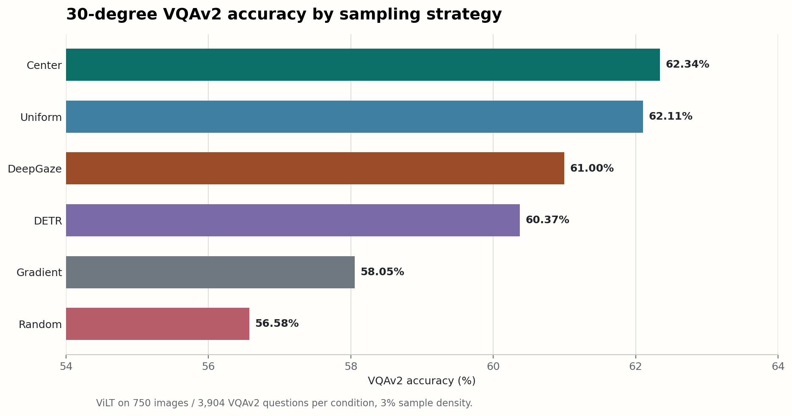
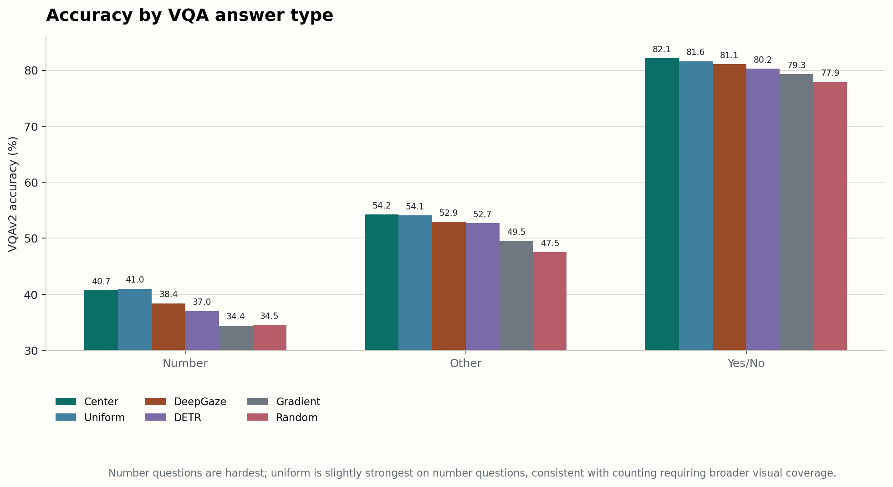
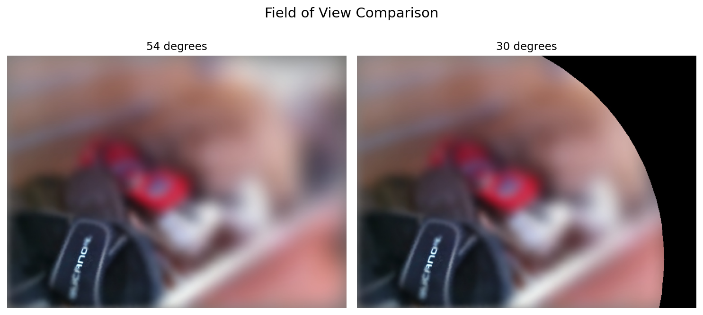
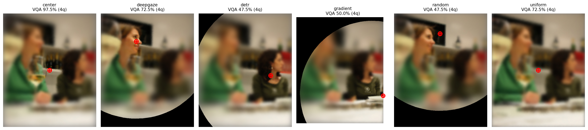

Research Question
Foveation tells a model how to spend pixels. It does not tell it where to look.
Question. The CVPR 2025 paper Seeing More with Less showed that foveated inputs can preserve model performance using only a small fraction of image pixels [1]. We ask the missing fixation question: if the model receives one high-resolution fovea, should that fovea be placed at the center, at a random point, on a salient region, or on a detected object?
Answer. In our main 30-degree VQAv2 run with ViLT [5], content-adaptive fixation is better than random fixation, but it does not beat center foveation or uniform sampling. DeepGaze is the best adaptive strategy, followed by DETR and gradient fixation. The result is not that saliency is useless; it is that VQA needs task-conditioned fixation. The same image can ask about a person, a glass, a count, a scene, or a letter, and a single generic saliency point often preserves the wrong evidence.
Motivation
Foveation solves half of sparse vision.
Human vision is not uniformly high resolution. The fovea samples densely near fixation, while peripheral vision is coarser [2]. But this biological strategy only works because humans also move their eyes toward useful parts of the scene.
Modern vision models usually consume uniformly resized images. The CVPR 2025 paper Seeing More with Less (SMwL) asks whether a biologically inspired input transform can preserve performance under a fixed pixel budget: sample densely near a fixation point, sample sparsely in the periphery, reconstruct the image, and feed it to an unchanged model [1]. At 3% sample density, SMwL reports that center-foveated variable sampling can outperform information-matched uniform sampling for several VQA and detection settings [1].
That result leaves a second question. If the high-resolution region matters, why should it always be centered? Center fixation is technically convenient and often strong because many datasets have photographer bias, but it is not a general policy for attention. Our project isolates fixation selection while holding the foveated sampler and downstream model fixed.
Method
Only the fixation point changes.
We extend the SMwL codebase with external fixation policies [1]. We keep the two original SMwL baselines, center-foveated variable sampling and information-matched uniform sampling, then add three content-derived fixation policies and a random control. For each foveated condition, a policy writes a fixation point; the same sampler then reconstructs a filtered image at 3% sample density. We evaluate each filtered image with the same frozen ViLT VQA model [5].
The central control is matched sample density. Center, random, gradient, DETR, and DeepGaze foveation all use the same nominal 3% pixel budget. Uniform sampling also uses the same sample budget, but distributes samples without a foveal center.
We compare six conditions. Center is the SMwL foveated baseline, with highest sample density at the image center. Uniform uses the same sample budget without a foveal center. Random is a seeded arbitrary fixation control. Gradient picks the peak Sobel gradient after Gaussian blur. DETR fixates the centroid of the highest-confidence detected object. DeepGaze fixates the peak of a DeepGaze IIE saliency map.
Experiments
VQAv2 with ViLT under a 3% pixel budget.
We reproduce one SMwL evaluation protocol: ViLT on VQAv2 validation questions paired with COCO val2014 images [1] [5] [6]. We use HuggingFace ViltProcessor and ViltForQuestionAnswering with the dandelin/vilt-b32-finetuned-vqa checkpoint. Predictions are answer-class logits mapped through the model answer vocabulary, then normalized and scored with VQA-style soft accuracy against ten human answers [6].
The main run uses 30-degree FOV, 3% sample density, 750 images, and 3,904 VQAv2 questions per condition. We use 30 degrees because it matches the FOV setting used for the SMwL-style baseline comparison. However, once the fixation point moves away from the image center, the circular foveated sampling support may no longer cover the full rectangular image. Pixels outside that support are blocked out, which means off-center methods can effectively receive fewer usable pixels than center fixation or uniform sampling. This makes the 30-degree comparison unfair to off-center fixation policies in a way that is caused by filtering, not by VQA evaluation. To see how much this artifact matters, we also ran a 54-degree FOV diagnostic. The wider FOV reduces black boundary artifacts, but it is biologically less faithful to the tighter foveal-view setup and was more computationally expensive to filter, so we could only run it on 100 images.
Experiments ran on MIT ORCD resources with 32 CPU cores, an NVIDIA L40S GPU, 512 GB memory, and six-hour jobs. Most wall time was spent generating filtered images rather than running ViLT inference.
Results
Content-adaptive fixation helps, but not enough to beat center or uniform.
The 30-degree run gives the cleanest answer to the main question. DeepGaze, DETR, and gradient fixation all outperform random fixation, so fixation placement clearly matters. But none of the content-adaptive policies outperform center foveation or uniform sampling.

| Condition | Accuracy | Approx. 95% CI | Delta vs. center | Questions |
|---|---|---|---|---|
| Center | 62.34% | +/- 1.52 | 0.00 | 3,904 |
| Uniform | 62.11% | +/- 1.52 | -0.24 | 3,904 |
| DeepGaze | 61.00% | +/- 1.53 | -1.34 | 3,904 |
| DETR | 60.37% | +/- 1.53 | -1.97 | 3,904 |
| Gradient | 58.05% | +/- 1.55 | -4.29 | 3,904 |
| Random | 56.58% | +/- 1.55 | -5.77 | 3,904 |
Table 1. Approximate intervals use a binomial standard-error calculation from the aggregate VQA score and question count. They are not a substitute for a paired bootstrap over per-question scores, but they show which effects are large enough to trust from this subset.
The result is mixed but informative. Random fixation is 5.77 points below center, so the foveated representation is sensitive to where the high-resolution region lands. DeepGaze recovers much of that loss, improving over random by 4.42 points. But the center and uniform baselines remain stronger. For VQA, preserving a little evidence everywhere can be more robust than committing the fovea to one visually salient or object-centered region.
Question type matters
VQAv2 groups questions by answer type. Yes/no questions ask for binary judgments and are often answerable from coarse scene cues. Number questions require counts, which can depend on evidence spread across the image. Other questions include object names, attributes, colors, materials, actions, and text-like answers, so they often require localized semantic detail.

Analysis
The failure mode is not simply bad saliency.
Center fixation is strong for a mundane but important reason: we hypothesize that many COCO/VQAv2 images are photographer-composed around central subjects, and many questions ask about those subjects. This center bias means a fixed central fovea is often a surprisingly good prior, even though it is not an active attention policy. Uniform sampling is strong for a different reason: it never chooses the wrong fixation point. It loses fine detail, but it preserves weak evidence across the image, which helps for scene context, counts, and secondary objects.
DeepGaze is the best content-adaptive policy, which supports the hypothesis that human-attention-style saliency often lands near useful evidence. But VQA is not free viewing. The relevant region is determined by the question, and the same image can require different fixations for different questions.

The image-42 diagnostic lets us put a number on the artifact. Using a near-black pixel threshold on the image panels, the 30-degree comparison contains about 15.5% black pixels for DeepGaze, 6.6% for gradient, and 16.5% for random, while center and uniform have essentially none. The 54-degree version reduces the measured black fraction to roughly 0% for all panels. This does not prove that every off-center example has the same loss, but it shows that the nominal 3% budget can become a smaller usable visual budget when the fovea moves.
The 54-degree diagnostic supports the boundary-artifact concern. The full 54-degree summary is: uniform 65.76% on 653 questions, DeepGaze 64.44% on 617, gradient 64.35% on 653, DETR 61.49% on 276, center 59.24% on 211, and random 58.29% on 211. DeepGaze rises from 61.00% in the 30-degree run to 64.44% in this wider-FOV run, consistent with reduced unsupported regions. But the question counts are uneven because not every condition had the same completed filtered-image set, so this is an artifact diagnostic rather than a clean leaderboard.

We could not exactly reproduce the SMwL ViLT/VQAv2 number because the inspected release provides the filtering code but not the complete end-to-end VQAv2 evaluation pipeline. We followed ViLT and VQAv2 conventions, but hidden differences in split handling, preprocessing, answer normalization, skipped examples, or scoring could affect direct comparison to the paper.
Limitations
The result is a controlled subset study, not a full reproduction.
First, our scale is much smaller than the likely SMwL evaluation scale. SMwL states that ViLT is evaluated on the VQAv2 validation split, but does not specify the exact evaluated counts in the main text [1]. If it used the standard VQAv2 validation set, that corresponds to roughly 40,504 images and 214,354 questions [6]. Our main 30-degree run uses 750 images and 3,904 questions, and our 54-degree diagnostic uses 100 images with uneven completion across methods. That can explain why our center-versus-uniform gap is only 0.24 points rather than the roughly 2-point gap reported by SMwL.
Second, 30-degree and 54-degree FOV answer different filtering questions. The 30-degree run is closest to the paper-style setup, but it creates unfair black-boundary artifacts for off-center fixation because the circular FOV support can fail to cover the rectangular image. The 54-degree run reduces those artifacts and makes off-center fixation visually more comparable, but it is less biologically faithful to the tighter foveal-view setting, changes the sampling tradeoff, and was computationally heavier to generate. Because of this filtering cost, we only ran 100 images at 54 degrees.
Third, we only report ViLT/VQAv2 results. Object detection evaluation was not completed, and random fixation should ideally be averaged over multiple seeds. Finally, all tested adaptive policies are image-conditioned but not question-conditioned, which is exactly the setting where VQA can expose failures.
Conclusion
Foveated models need fixation policies, but generic saliency is not enough.
Our experiment separates two parts of efficient vision: how to allocate resolution around a fixation, and how to choose the fixation. The first is the strength of SMwL-style foveated sampling. The second remains open.
On our VQAv2 subset, adaptive fixation clearly beats random placement, so looking location matters. But DeepGaze, DETR, and gradient fixation do not beat center foveation or uniform sampling. The most defensible interpretation is that VQA requires task-conditioned evidence selection. A human-gaze-style saliency point can be visually plausible and still miss the evidence needed for a particular question.
Future work should run the full VQAv2 validation set, evaluate matched 54-degree conditions, measure usable non-black support for every filtered image, and test question-conditioned or multi-fixation scanpaths. A simple next baseline would parse the question for object words and choose the DETR box most compatible with those words, rather than always fixating the highest-confidence object. Another promising direction is training vision-language models with saliency-guided masking, rather than using saliency only at inference time. Work on saliency-aware masking for contrastive self-supervised learning suggests that masking policies can shape representations by controlling whether foreground and background evidence are preserved or removed [10].
References
References
- Gizdov, A., Ullman, S., and Harari, D. Seeing More with Less: Human-like Representations in Vision Models. CVPR, 2025.
- Curcio, C. A., Sloan, K. R., Kalina, R. E., and Hendrickson, A. E. Human Photoreceptor Topography. Journal of Comparative Neurology, 1990.
- Itti, L., Koch, C., and Niebur, E. A Model of Saliency-Based Visual Attention for Rapid Scene Analysis. IEEE TPAMI, 1998.
- Linardos, A., Kummerer, M., Press, O., and Bethge, M. DeepGaze IIE: Calibrated Prediction in and Out-of-Domain for State-of-the-Art Saliency Modeling. ICCV, 2021.
- Kim, W., Son, B., and Kim, I. ViLT: Vision-and-Language Transformer Without Convolution or Region Supervision. ICML, 2021.
- Goyal, Y., Khot, T., Summers-Stay, D., Batra, D., and Parikh, D. Making the V in VQA Matter: Elevating the Role of Image Understanding in Visual Question Answering. CVPR, 2017.
- Caron, M. et al. Emerging Properties in Self-Supervised Vision Transformers. ICCV, 2021.
- Yamamoto, T., Akahoshi, H., and Kitazawa, S. Emergence of Human-Like Attention in Self-Supervised Vision Transformers: an eye-tracking study. arXiv:2410.22768, 2024.
- Dallain, M., Rodriguez, L., Perrinet, L. U., and Miramond, B. A Saccade-inspired Approach to Image Classification using Vision Transformer Attention Maps. arXiv:2603.09613, 2026.
- Chin, Z.-Y., Jiang, C.-M., Huang, C.-C., Chen, P.-Y., and Chiu, W.-C. Masking Improves Contrastive Self-Supervised Learning for ConvNets, and Saliency Tells You Where. WACV, 2024.
- Carion, N., Massa, F., Synnaeve, G., Usunier, N., Kirillov, A., and Zagoruyko, S. End-to-End Object Detection with Transformers. ECCV, 2020.